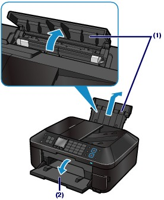
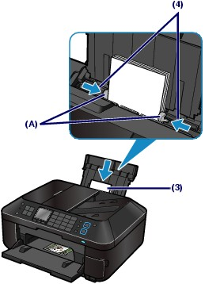
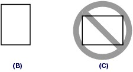
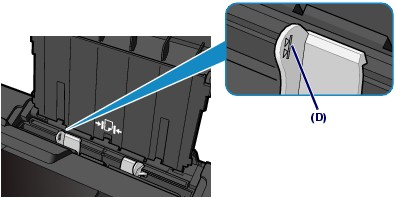

Loading Paper in the Rear Tray
Loading Paper in the Rear TrayYou can load photo paper or envelopes in the Rear Tray.
 Important Important
|
Prepare paper.
See step 1 in Loading Paper in the Cassette.
Align the edges of paper. If paper is curled, flatten it.
Load paper.
(1) Open the Paper Support, raise it, then tip it back.
(2) Open the Paper Output Tray gently.

(3) Slide the Paper Guides (A) to open them, and load the paper in the center of the Rear Tray WITH THE PRINT SIDE FACING YOU.
(4) Slide the Paper Guides (A) to align them with both sides of the paper stack.
Do not slide the Paper Guides too hard. The paper may not be fed properly.

| Important
 |
 Note Note
 |
| Note After loading paper
See Changing the Settings in "Printing Photos Saved on the Memory Card / USB Flash Drive" or Changing the Settings in "Making Copies".
See Printing Documents. |